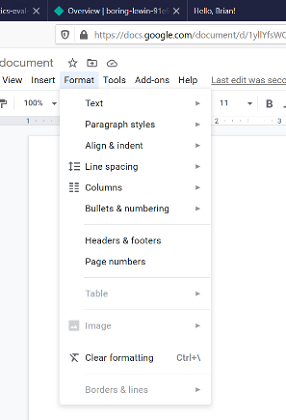
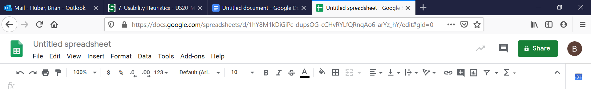
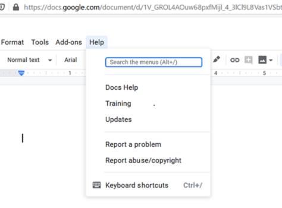

The system should always keep the users informed about what is going on, through appropriate
feedback within a reasonable time. As depicted in the image above, Google Doc users are
provided with a cloud icon that indicates the network status of their document. When changes
are made to the document, the icon will say “saving…” to indicate it is saving the changes.
When it is finished the icon will appear as depicted in the image above, which is a cloud icon
with a checkmark in the center. Reassuring the user that their document is saved and won’t be
lost when closing the application after use.

The system should speak the users’ language, with words, phrases and concepts familiar to the
user for effective use. In the case of Google Doc, there are many features that allow the user
to format or adjust a document to a real-world convention that they are familiar with. As depicted
by the images above, the user can modify the file type, language of the text, and the overall
structure or format of a body of text.
Users often choose system functions by mistake and will need a clearly marked “emergency exit”
to leave the unwanted state quickly and efficiently. Google Doc clearly supports this idea by
providing a redo and undo option in the Edit feature, which can be seen in the picture above.

Users should not have to wonder whether different words, situations, or actions will mean the same
thing. In the case of Google doc, this principle is clearly demonstrated in the primary tool bar.
As depicted in the pictures above, the tool bars for Google Doc and Google Sheets are very similar
with very similar menu options as well. This allows users to efficiently use the applications and
increases perceived intuitiveness.
Error prevention to eliminate or reduce the potential of an error taking place, requires careful
design. With Google Doc, there are several ways in which the design helps prevent errors across the
system. The picture on the left shows how Google prevents the user from accidentally moving a file
or doc that is already located in the “My Drive” folder. Google disables the button if the file is
already present, and clearly indicates the button is disabled to the user. In the picture on the right,
Google allows for search recommendations, which helps eliminate or reduce the chance of user
typos taking place.
Minimize the user’s memory load. In other words, make system features clearly visible so the user
does not have to memorize information from one part of the dialogue to another. As an example, Google
Doc previews the fonts you can pick from, instead of just the font name. As a result, the user does not
have to remember what a certain font looks like based only on the name.

Catering accelerators to both experienced and inexperienced users can speed up user interaction and
efficiency. Google Doc allows users of any experience level to tailor frequent actions by clearly listing
the keyboard shortcuts and accelerators in grey text, as shown in the picture on the left. Additionally,
in the picture on the right, the Help option has a Keyboard shortcuts option that takes the user to a
designated list of shortcuts and accelerators.
Dialogues should not contain unnecessary information. Any unnecessary or irrelevant info can serve
to reduce the relevance of other info and diminishes their relative visibility. For Google Doc, as expected,
their overall outlay puts focus on the tool bar and the important functions located within the tool bar.
Additionally, as shown in the picture above, the Google Doc format allows for the user to further reduce
information on the page if need be.
Error messages should be expressed in plain language, precisely indicate the problem, and constructively
suggest a solution. Google Doc does this by using red text and red indicators to show the user that a
problem has occurred, like the one in depicted in the picture above. The error indicators are then followed
by a “Forgot password?” prompt that guides the user to a possible solution.